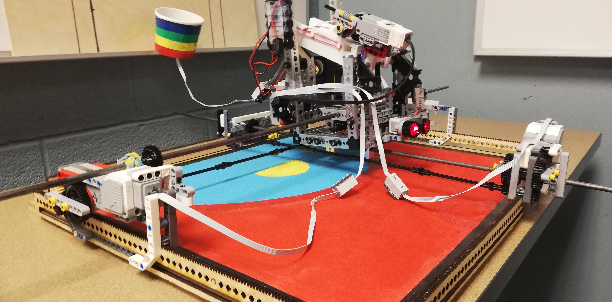

z.png)
Basketball shooting helper

ShotBotTM is a robotic shooting partner designed to make shooting practice fun again, and in return, improve the shooting percentage of the opponent/user. The key task of the ShotBotTM is to input a list of data containing the number of shots taken, anticipated points for each shot taken, the number of successful shots, total points scored, and the duration of the round (all done by the user) and in return replicates the shots and tries to shoot with similar statistics as the opponent(CITE).

Complete assembly of the ShotBotTM!
Click here for the complete design report containing the mechanical design, high level software design and implementation, scope and costraints.
Basketball players at any age and any skill level struggle with shooting. Even NBA players work every offseason to make the smallest improvements in their overall shooting percentages, with emphasis placed on free throw shooting and three-point shooting. ShotBotTM is a robotic shooting partner to make shooting practice fun again, and in turn, improve the shooting percentage of the user.
Shooting practices are repetitive and boring, and as a result, the shooter experiences a large decrease in concentration over time. Athletes are widely known to be competitive, as this drive to be better than the competition is vital to success in their field. Our robot is programmed to closely imitate the shooters shooting percentage to provide a fast-paced and engaging competition. The saying goes that “Practice makes Perfect”, and our robotic shooting partner will make shooting practice fun again. While practicing against the ShotBotTM, the athlete will compete harder than if he/she was shooting alone, thus helping the player improve his or her shooting percentage. Hence, the ShotBotTM was born!
Here is the formal presentation for the ShotBot, that was to be presented to our instructors who were hypothetically clients/stakeholders who were interested in our product.
Although the mechanical design was fully thought out before printing laser cutting, 3D printing, and assembling, there were small flaws in the design. One problem with the mechanical system was the inability to drive at a constant speed across the court. At some points on the rails, the robot struggled to maintain its velocity. This could have been solved by replacing the LEGO axles with wooden axles for less flexibility.
Apart from hardware issues, The software design was planned out in advance of the programming; however, it involved many spontaneous changes to the source code throughout the process. If more time was allotted, the software could have been made more robust by adding an extra function for file input and processing the data and implementing it into the array.
None the less, alot of project management and robotics experience was acquired
A huge thank you to the MTE100 staff at the University of Waterloo for giving me an opportunity in developing my robotics skills through this mini capstone project.
Another huge shoutout to my teammates - Abhimanyu Singh, Balen Seeton and Ansh Sahny - for sticking together through this project, and teaching me the new way of running through sleepless nights of coding.